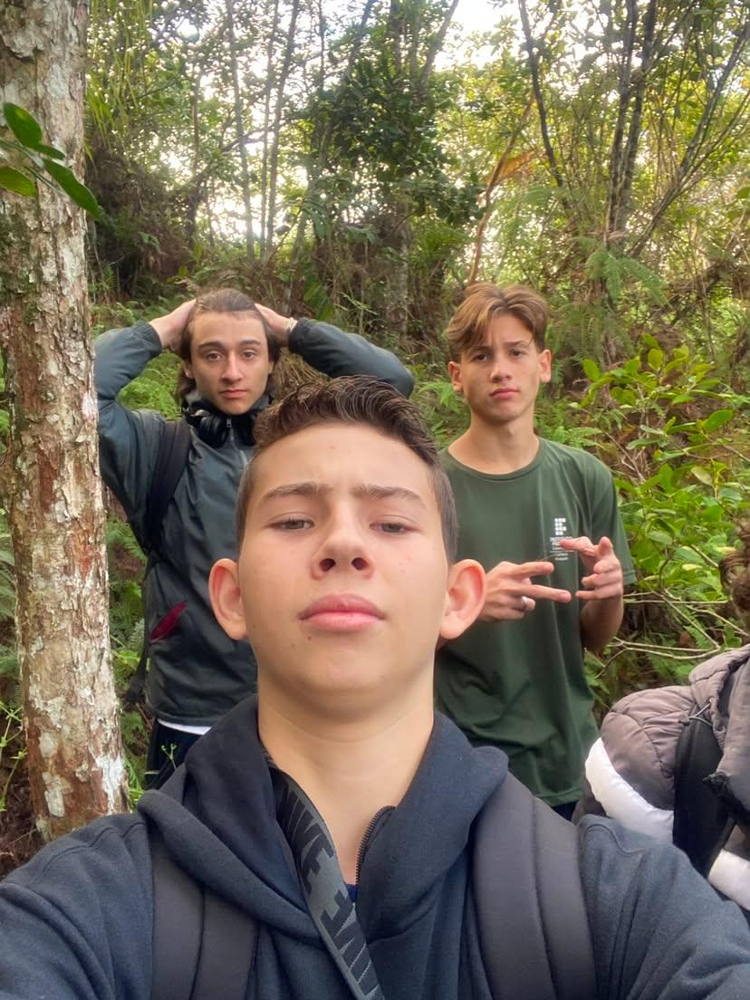

Guilherme Luciano da Silva
INICIAL, TECNOLOGIA E LOGINResponsável pelo desenvolvimento das páginas Inicial, Tecnologia e Login do site. Também realizou pesquisas, organizou as informações e trabalhou na aparência das páginas.

Este projeto foi criado com o propósito de explorar a Roma Antiga através de uma perspectiva histórica e tecnológica. Nosso objetivo é apresentar como o comércio, as rotas, as mercadorias e o desenvolvimento de diferentes tecnologias contribuíram para a organização e expansão da sociedade romana.
Para isso, reunimos informações de diferentes pesquisas e transformamos esse conteúdo em um site educativo, buscando tornar o aprendizado mais visual, organizado e acessível. Cada página aborda uma parte do tema e contribui para construir uma visão mais ampla sobre o funcionamento da sociedade romana.
O site também representa o trabalho realizado pelo nosso grupo, unindo pesquisa histórica e desenvolvimento web. Dessa forma, utilizamos a tecnologia como uma ferramenta para apresentar e compartilhar conhecimento de uma maneira mais dinâmica.
Nosso objetivo é facilitar a compreensão de aspectos importantes da Roma Antiga por meio de uma apresentação simples e interativa. Queremos que o visitante possa conhecer diferentes elementos da sociedade romana enquanto navega por um conteúdo organizado e desenvolvido especialmente para este projeto.
Conheça as pessoas responsáveis pelo desenvolvimento deste projeto e a contribuição de cada integrante.

Responsável pelo desenvolvimento das páginas Inicial, Tecnologia e Login do site. Também realizou pesquisas, organizou as informações e trabalhou na aparência das páginas.
Responsável pelo desenvolvimento das páginas Fale Conosco, Rotas e Quiz. Também ficou encarregado de fazer o design do site e organizar as atas das aulas, e distribuindo as responsabilidades entre os integrantes.
Responsável pela organização do GitHub e pelo desenvolvimento das páginas Comércio, Imperadores e Fontes. Também colaborou com o design do site.
Responsável pelo desenvolvimento das páginas Mercadorias, Poder e Sobre, além da criação e organização do design do site. Também realizou pesquisas e trabalhou na aparência das páginas.